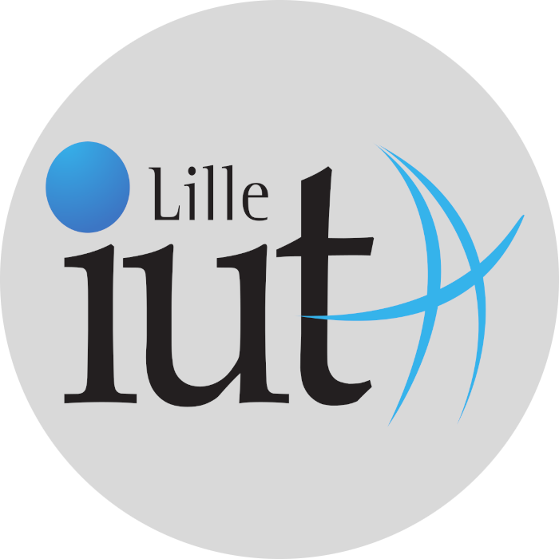
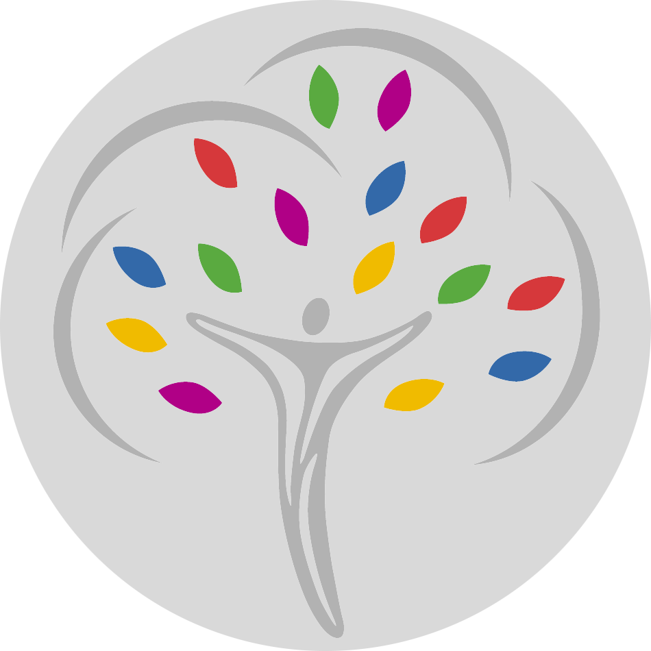

MON PARCOURS
-

IUT de Lille
BUT informatique
2021 - 2024
Je fais ce BUT pour devenir programmeur mais après une poursuite d'études.
-
IUT de Lille
BUT informatique
2021 - 2024
Je fais ce BUT pour devenir programmeur mais après une poursuite d'études.
-

Lycée Sacré-coeur de Tourcoing
Baccalauréat général
2018 - 2021
Mention bien.
Spécialités: Mathématiques et NSI.
Option: Math experte. -
Collège Sacré-coeur de Tourcoing
Brevet des collèges
2014 - 2018
Mension très bien.
-
Collège Sacré-coeur de Tourcoing
Brevet des collèges
2014 - 2018
Mension très bien.
-

Renault
Stage sur site de R&D
1 semaine - 2019
J'ai découverte le travail en grande entreprise ainsi que les multiples possibilités d’emplois existant.
-

IMC J+R
Stage de directeur commercial
1 semaine - 2018
J'ai découverte le travail en petite entreprise et le métier de directeur commercial. J'ai eu beaucoup de contact avec les clients.
-
IMC J+R
Stage de directeur commercial
1 semaine - 2018
J'ai découverte le travail en petite entreprise et le métier de directeur commercial. J'ai eu beaucoup de contact avec les clients.